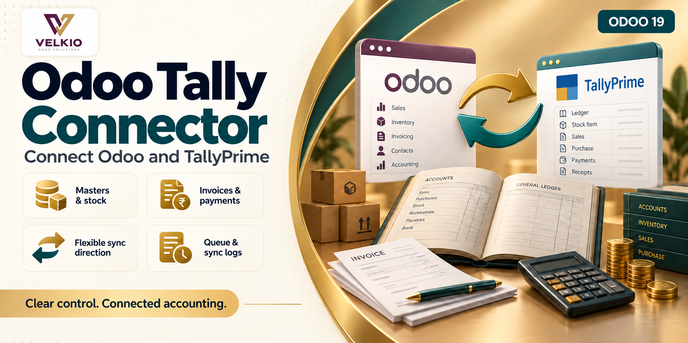
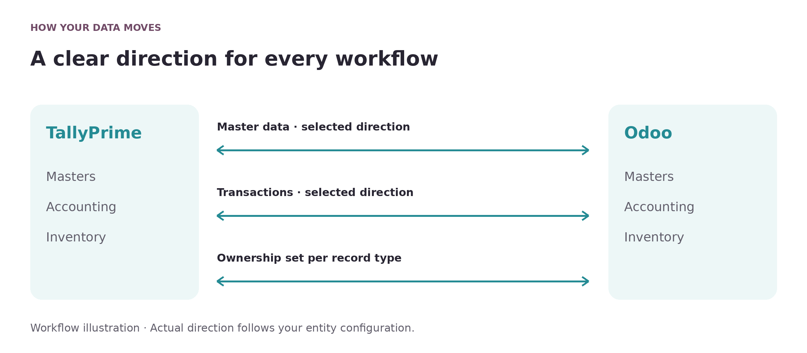
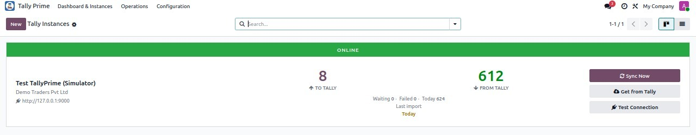
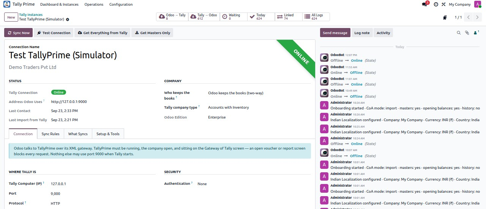
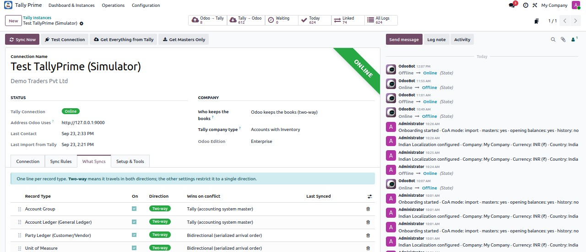
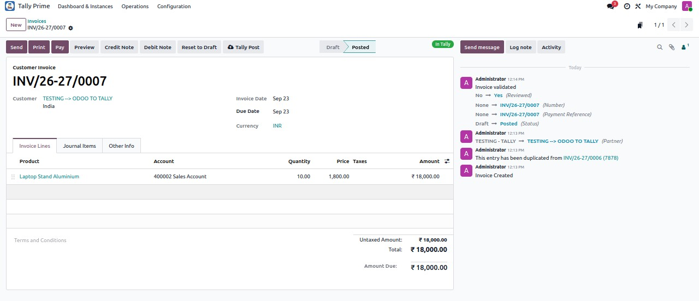
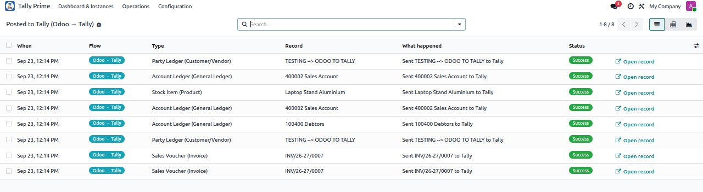
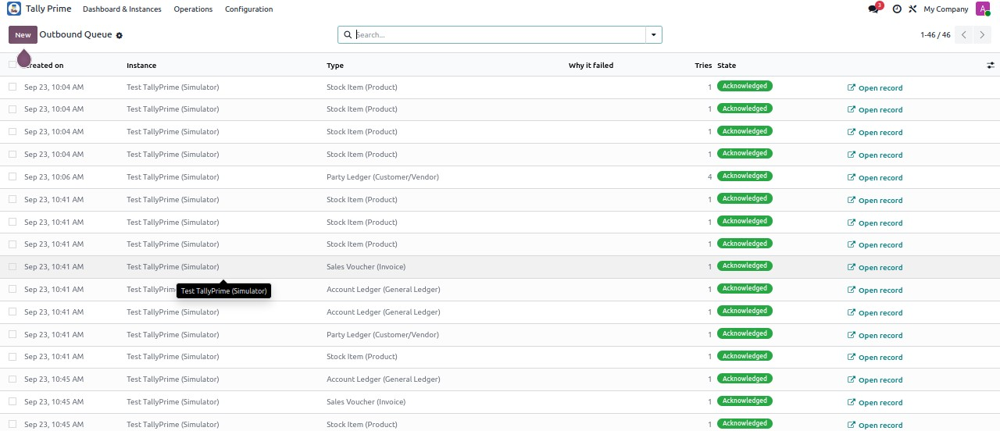

<section class="oe_container" style="box-sizing:border-box;display:block;max-width:1320px;width:100%;margin:0 auto;line-height:1.6;font-family:Arial,Helvetica,sans-serif;color:#282532;background-color:#FFFFFF;">
<div class="container py-3" style="box-sizing:border-box;width:100%;margin:0 auto;padding:0 16px;padding-top:16px;padding-bottom:16px;">
<div class="row align-items-center mb-3" style="box-sizing:border-box;display:flex;flex-wrap:wrap;margin-left:-10px;margin-right:-10px;align-items:center;margin-bottom:16px;"><div class="col-sm-4" style="box-sizing:border-box;flex:1 1 280px;min-width:0;max-width:100%;padding-left:10px;padding-right:10px;"></div><div class="col-sm-8 text-sm-right text-sm-end" style="box-sizing:border-box;flex:2 1 560px;min-width:0;max-width:100%;padding-left:10px;padding-right:10px;"><span class="badge p-2 m-1" style="box-sizing:border-box;display:inline-block;font-size:12px;font-weight:700;line-height:1.3;border-radius:5px;padding:8px;margin:4px;color:#714B67;background-color:#F6F1F6;">Odoo 19</span><span class="badge p-2 m-1" style="box-sizing:border-box;display:inline-block;font-size:12px;font-weight:700;line-height:1.3;border-radius:5px;padding:8px;margin:4px;color:#714B67;background-color:#F6F1F6;">Community &amp; Enterprise</span></div></div>
<section id="overview" class="p-3 p-md-4 my-3 rounded" style="box-sizing:border-box;padding:16px;margin-top:16px;margin-bottom:16px;border-radius:10px;background-color:#F6F1F6;">
<div class="text-center mb-4" style="box-sizing:border-box;text-align:center;margin-bottom:24px;"><p style="box-sizing:border-box;margin:0 0 16px;overflow-wrap:anywhere;font-size:12px;letter-spacing:2px;color:#9A7135;font-weight:700;">VELKIO ODOO SOLUTIONS</p><h1 style="box-sizing:border-box;margin:0 0 16px;line-height:1.15;font-size:42px;font-weight:800;color:#282532;">Velkio TallyPrime Connector</h1><p style="box-sizing:border-box;margin:0 0 16px;overflow-wrap:anywhere;font-size:20px;line-height:1.5;color:#714B67;">Connected accounting, with control over every flow.</p></div><div class="row mb-4" style="box-sizing:border-box;display:flex;flex-wrap:wrap;margin-left:-10px;margin-right:-10px;margin-bottom:24px;"><div class="col-6 col-md-4 col-lg-2 mb-2" style="box-sizing:border-box;flex:1 1 125px;min-width:0;max-width:100%;padding-left:10px;padding-right:10px;margin-bottom:8px;"><div class="h-100 p-3 text-center rounded" style="box-sizing:border-box;height:100%;padding:16px;text-align:center;border-radius:10px;background-color:#302236;"><div style="box-sizing:border-box;color:#E5BE7E;font-size:21px;font-weight:700;">19.0</div><div style="box-sizing:border-box;color:#F5EFF6;font-size:13px;">Odoo version</div></div></div><div class="col-6 col-md-4 col-lg-2 mb-2" style="box-sizing:border-box;flex:1 1 125px;min-width:0;max-width:100%;padding-left:10px;padding-right:10px;margin-bottom:8px;"><div class="h-100 p-3 text-center rounded" style="box-sizing:border-box;height:100%;padding:16px;text-align:center;border-radius:10px;background-color:#302236;"><div style="box-sizing:border-box;color:#E5BE7E;font-size:21px;font-weight:700;">CE / EE</div><div style="box-sizing:border-box;color:#F5EFF6;font-size:13px;">Editions</div></div></div><div class="col-6 col-md-4 col-lg-2 mb-2" style="box-sizing:border-box;flex:1 1 125px;min-width:0;max-width:100%;padding-left:10px;padding-right:10px;margin-bottom:8px;"><div class="h-100 p-3 text-center rounded" style="box-sizing:border-box;height:100%;padding:16px;text-align:center;border-radius:10px;background-color:#302236;"><div style="box-sizing:border-box;color:#E5BE7E;font-size:21px;font-weight:700;">Odoo.sh</div><div style="box-sizing:border-box;color:#F5EFF6;font-size:13px;">Cloud deployment</div></div></div><div class="col-6 col-md-4 col-lg-2 mb-2" style="box-sizing:border-box;flex:1 1 125px;min-width:0;max-width:100%;padding-left:10px;padding-right:10px;margin-bottom:8px;"><div class="h-100 p-3 text-center rounded" style="box-sizing:border-box;height:100%;padding:16px;text-align:center;border-radius:10px;background-color:#302236;"><div style="box-sizing:border-box;color:#E5BE7E;font-size:21px;font-weight:700;">On-premise</div><div style="box-sizing:border-box;color:#F5EFF6;font-size:13px;">Self-hosted</div></div></div><div class="col-6 col-md-4 col-lg-2 mb-2" style="box-sizing:border-box;flex:1 1 125px;min-width:0;max-width:100%;padding-left:10px;padding-right:10px;margin-bottom:8px;"><div class="h-100 p-3 text-center rounded" style="box-sizing:border-box;height:100%;padding:16px;text-align:center;border-radius:10px;background-color:#302236;"><div style="box-sizing:border-box;color:#E5BE7E;font-size:21px;font-weight:700;">LGPL-3</div><div style="box-sizing:border-box;color:#F5EFF6;font-size:13px;">Module license</div></div></div><div class="col-6 col-md-4 col-lg-2 mb-2" style="box-sizing:border-box;flex:1 1 125px;min-width:0;max-width:100%;padding-left:10px;padding-right:10px;margin-bottom:8px;"><div class="h-100 p-3 text-center rounded" style="box-sizing:border-box;height:100%;padding:16px;text-align:center;border-radius:10px;background-color:#302236;"><div style="box-sizing:border-box;color:#E5BE7E;font-size:21px;font-weight:700;">Sync</div><div style="box-sizing:border-box;color:#F5EFF6;font-size:13px;">Configurable</div></div></div></div><div class="row align-items-center" style="box-sizing:border-box;display:flex;flex-wrap:wrap;margin-left:-10px;margin-right:-10px;align-items:center;"><div class="col-lg-6 mb-4" style="box-sizing:border-box;flex:1 1 420px;min-width:0;max-width:100%;padding-left:10px;padding-right:10px;margin-bottom:24px;"><h2 style="box-sizing:border-box;margin:0 0 16px;line-height:1.3;font-size:27px;font-weight:700;color:#282532;">Connect accounting records with clear ownership</h2><p class="" style="box-sizing:border-box;margin:0 0 16px;overflow-wrap:anywhere;color:#625F6C;font-size:16px;line-height:1.8;">Connect Odoo and TallyPrime for accounting and inventory synchronization. Choose which system owns each record type, follow outgoing records through a queue and review results inside Odoo.</p><ul class="pl-4" style="box-sizing:border-box;padding-left:24px;color:#514A59;font-size:16px;line-height:1.9;"><li style="box-sizing:border-box;">Masters &amp; transactions</li><li style="box-sizing:border-box;">Direction per record type</li><li style="box-sizing:border-box;">Queue &amp; monitoring</li></ul><a href="#features" class="btn px-4 py-3 m-1" style="box-sizing:border-box;text-decoration:none;display:inline-block;text-align:center;line-height:1.5;padding-left:24px;padding-right:24px;padding-top:16px;padding-bottom:16px;margin:4px;background-color:#714B67;color:#FFFFFF;border:1px solid #714B67;font-size:15px;font-weight:700;border-radius:8px;">Explore capabilities</a><a href="#setup" class="btn px-4 py-3 m-1" style="box-sizing:border-box;text-decoration:none;display:inline-block;text-align:center;line-height:1.5;padding-left:24px;padding-right:24px;padding-top:16px;padding-bottom:16px;margin:4px;background-color:#FFFFFF;color:#714B67;border:1px solid #714B67;font-size:15px;font-weight:700;border-radius:8px;">Setup &amp; requirements</a></div><div class="col-lg-6 mb-4" style="box-sizing:border-box;flex:1 1 420px;min-width:0;max-width:100%;padding-left:10px;padding-right:10px;margin-bottom:24px;"><div class="p-3 rounded" style="box-sizing:border-box;padding:16px;border-radius:10px;background-color:#302236;"><div class="p-3 rounded" style="box-sizing:border-box;padding:16px;border-radius:10px;background-color:#FFFFFF;"><p style="box-sizing:border-box;margin:0 0 16px;overflow-wrap:anywhere;color:#714B67;font-size:12px;font-weight:700;letter-spacing:1px;">YOUR OPERATIONAL WORKSPACE</p><div class="row" style="box-sizing:border-box;display:flex;flex-wrap:wrap;margin-left:-10px;margin-right:-10px;"><div class="col-sm-6 mb-3" style="box-sizing:border-box;flex:1 1 180px;min-width:0;max-width:100%;padding-left:10px;padding-right:10px;margin-bottom:16px;"><div class="h-100 border rounded p-3" style="box-sizing:border-box;height:100%;border:1px solid #E6DFE8;border-radius:10px;padding:16px;background-color:#F8F5F9;"><h3 style="box-sizing:border-box;margin:0 0 16px;line-height:1.3;font-size:18px;color:#714B67;">Accounting</h3><p class="mb-0" style="box-sizing:border-box;margin:0 0 16px;overflow-wrap:anywhere;margin-bottom:0;font-size:14px;color:#625F6C;line-height:1.5;">Ledgers, parties and taxes</p></div></div><div class="col-sm-6 mb-3" style="box-sizing:border-box;flex:1 1 180px;min-width:0;max-width:100%;padding-left:10px;padding-right:10px;margin-bottom:16px;"><div class="h-100 border rounded p-3" style="box-sizing:border-box;height:100%;border:1px solid #E6DFE8;border-radius:10px;padding:16px;background-color:#F8F5F9;"><h3 style="box-sizing:border-box;margin:0 0 16px;line-height:1.3;font-size:18px;color:#714B67;">Inventory</h3><p class="mb-0" style="box-sizing:border-box;margin:0 0 16px;overflow-wrap:anywhere;margin-bottom:0;font-size:14px;color:#625F6C;line-height:1.5;">Items, units and locations</p></div></div><div class="col-sm-6 mb-3" style="box-sizing:border-box;flex:1 1 180px;min-width:0;max-width:100%;padding-left:10px;padding-right:10px;margin-bottom:16px;"><div class="h-100 border rounded p-3" style="box-sizing:border-box;height:100%;border:1px solid #E6DFE8;border-radius:10px;padding:16px;background-color:#F8F5F9;"><h3 style="box-sizing:border-box;margin:0 0 16px;line-height:1.3;font-size:18px;color:#714B67;">Transactions</h3><p class="mb-0" style="box-sizing:border-box;margin:0 0 16px;overflow-wrap:anywhere;margin-bottom:0;font-size:14px;color:#625F6C;line-height:1.5;">Invoices, bills and payments</p></div></div><div class="col-sm-6 mb-3" style="box-sizing:border-box;flex:1 1 180px;min-width:0;max-width:100%;padding-left:10px;padding-right:10px;margin-bottom:16px;"><div class="h-100 border rounded p-3" style="box-sizing:border-box;height:100%;border:1px solid #E6DFE8;border-radius:10px;padding:16px;background-color:#F8F5F9;"><h3 style="box-sizing:border-box;margin:0 0 16px;line-height:1.3;font-size:18px;color:#714B67;">Ownership</h3><p class="mb-0" style="box-sizing:border-box;margin:0 0 16px;overflow-wrap:anywhere;margin-bottom:0;font-size:14px;color:#625F6C;line-height:1.5;">Direction per record type</p></div></div><div class="col-sm-6 mb-3" style="box-sizing:border-box;flex:1 1 180px;min-width:0;max-width:100%;padding-left:10px;padding-right:10px;margin-bottom:16px;"><div class="h-100 border rounded p-3" style="box-sizing:border-box;height:100%;border:1px solid #E6DFE8;border-radius:10px;padding:16px;background-color:#F8F5F9;"><h3 style="box-sizing:border-box;margin:0 0 16px;line-height:1.3;font-size:18px;color:#714B67;">Outbound queue</h3><p class="mb-0" style="box-sizing:border-box;margin:0 0 16px;overflow-wrap:anywhere;margin-bottom:0;font-size:14px;color:#625F6C;line-height:1.5;">Follow outgoing changes</p></div></div><div class="col-sm-6 mb-3" style="box-sizing:border-box;flex:1 1 180px;min-width:0;max-width:100%;padding-left:10px;padding-right:10px;margin-bottom:16px;"><div class="h-100 border rounded p-3" style="box-sizing:border-box;height:100%;border:1px solid #E6DFE8;border-radius:10px;padding:16px;background-color:#F8F5F9;"><h3 style="box-sizing:border-box;margin:0 0 16px;line-height:1.3;font-size:18px;color:#714B67;">Monitoring</h3><p class="mb-0" style="box-sizing:border-box;margin:0 0 16px;overflow-wrap:anywhere;margin-bottom:0;font-size:14px;color:#625F6C;line-height:1.5;">Logs and quarantine</p></div></div></div></div></div></div></div>
</section>
<div class="text-center p-2 my-3 border rounded" style="box-sizing:border-box;text-align:center;padding:8px;margin-top:16px;margin-bottom:16px;border:1px solid #E6DFE8;border-radius:10px;background-color:#FFFFFF;"><a href="#overview" class="d-inline-block px-3 py-2" style="box-sizing:border-box;text-decoration:none;display:inline-block;padding-left:16px;padding-right:16px;padding-top:8px;padding-bottom:8px;color:#714B67;font-size:14px;font-weight:700;">Overview</a><a href="#features" class="d-inline-block px-3 py-2" style="box-sizing:border-box;text-decoration:none;display:inline-block;padding-left:16px;padding-right:16px;padding-top:8px;padding-bottom:8px;color:#714B67;font-size:14px;font-weight:700;">Capabilities</a><a href="#coverage" class="d-inline-block px-3 py-2" style="box-sizing:border-box;text-decoration:none;display:inline-block;padding-left:16px;padding-right:16px;padding-top:8px;padding-bottom:8px;color:#714B67;font-size:14px;font-weight:700;">What syncs</a><a href="#setup" class="d-inline-block px-3 py-2" style="box-sizing:border-box;text-decoration:none;display:inline-block;padding-left:16px;padding-right:16px;padding-top:8px;padding-bottom:8px;color:#714B67;font-size:14px;font-weight:700;">Setup</a><a href="#screenshots" class="d-inline-block px-3 py-2" style="box-sizing:border-box;text-decoration:none;display:inline-block;padding-left:16px;padding-right:16px;padding-top:8px;padding-bottom:8px;color:#714B67;font-size:14px;font-weight:700;">Screenshots</a><a href="#documentation" class="d-inline-block px-3 py-2" style="box-sizing:border-box;text-decoration:none;display:inline-block;padding-left:16px;padding-right:16px;padding-top:8px;padding-bottom:8px;color:#714B67;font-size:14px;font-weight:700;">Documentation</a><a href="#faq" class="d-inline-block px-3 py-2" style="box-sizing:border-box;text-decoration:none;display:inline-block;padding-left:16px;padding-right:16px;padding-top:8px;padding-bottom:8px;color:#714B67;font-size:14px;font-weight:700;">FAQs</a><a href="#support" class="d-inline-block px-3 py-2" style="box-sizing:border-box;text-decoration:none;display:inline-block;padding-left:16px;padding-right:16px;padding-top:8px;padding-bottom:8px;color:#714B67;font-size:14px;font-weight:700;">Support</a></div>
<div class="my-4" style="box-sizing:border-box;margin-top:24px;margin-bottom:24px;"></div>
<section id="features" class="p-3 p-md-4 my-3 rounded" style="box-sizing:border-box;padding:16px;margin-top:16px;margin-bottom:16px;border-radius:10px;background-color:#FFFFFF;">
<p class="mb-2" style="box-sizing:border-box;margin:0 0 16px;overflow-wrap:anywhere;margin-bottom:8px;color:#714B67;font-size:12px;font-weight:700;letter-spacing:2px;">CONNECTOR CAPABILITIES</p>
<h2 class="mb-4" style="box-sizing:border-box;margin:0 0 16px;line-height:1.3;margin-bottom:24px;color:#282532;font-size:29px;font-weight:700;">See how it fits your everyday work</h2><p class="" style="box-sizing:border-box;margin:0 0 16px;overflow-wrap:anywhere;color:#625F6C;font-size:16px;line-height:1.8;">Explore the operations included in this release, from connection setup through record review.</p><div class="row" style="box-sizing:border-box;display:flex;flex-wrap:wrap;margin-left:-10px;margin-right:-10px;">
<div class="col-md-6 col-lg-4 mb-3" style="box-sizing:border-box;flex:1 1 280px;min-width:0;max-width:100%;padding-left:10px;padding-right:10px;margin-bottom:16px;"><div class="h-100 p-4 border rounded" style="box-sizing:border-box;height:100%;padding:24px;border:1px solid #E6DFE8;border-radius:10px;border-color:#E6DFE8;background-color:#FFFFFF;">
<p style="box-sizing:border-box;margin:0 0 16px;overflow-wrap:anywhere;color:#9A7135;font-size:13px;font-weight:700;">01</p><h3 style="box-sizing:border-box;margin:0 0 16px;line-height:1.3;color:#282532;font-size:20px;font-weight:700;">Choose the direction</h3>
<p class="" style="box-sizing:border-box;margin:0 0 16px;overflow-wrap:anywhere;color:#625F6C;font-size:16px;line-height:1.8;">Set Tally → Odoo, Odoo → Tally or two-way synchronization for supported record types, with a defined source of truth.</p></div></div>
<div class="col-md-6 col-lg-4 mb-3" style="box-sizing:border-box;flex:1 1 280px;min-width:0;max-width:100%;padding-left:10px;padding-right:10px;margin-bottom:16px;"><div class="h-100 p-4 border rounded" style="box-sizing:border-box;height:100%;padding:24px;border:1px solid #E6DFE8;border-radius:10px;border-color:#E6DFE8;background-color:#FFFFFF;">
<p style="box-sizing:border-box;margin:0 0 16px;overflow-wrap:anywhere;color:#9A7135;font-size:13px;font-weight:700;">02</p><h3 style="box-sizing:border-box;margin:0 0 16px;line-height:1.3;color:#282532;font-size:20px;font-weight:700;">Connect your master data</h3>
<p class="" style="box-sizing:border-box;margin:0 0 16px;overflow-wrap:anywhere;color:#625F6C;font-size:16px;line-height:1.8;">Work with account groups, general ledgers, parties, units, stock groups, stock items, locations, cost centres, taxes and currencies.</p></div></div>
<div class="col-md-6 col-lg-4 mb-3" style="box-sizing:border-box;flex:1 1 280px;min-width:0;max-width:100%;padding-left:10px;padding-right:10px;margin-bottom:16px;"><div class="h-100 p-4 border rounded" style="box-sizing:border-box;height:100%;padding:24px;border:1px solid #E6DFE8;border-radius:10px;border-color:#E6DFE8;background-color:#FFFFFF;">
<p style="box-sizing:border-box;margin:0 0 16px;overflow-wrap:anywhere;color:#9A7135;font-size:13px;font-weight:700;">03</p><h3 style="box-sizing:border-box;margin:0 0 16px;line-height:1.3;color:#282532;font-size:20px;font-weight:700;">Bring transactions together</h3>
<p class="" style="box-sizing:border-box;margin:0 0 16px;overflow-wrap:anywhere;color:#625F6C;font-size:16px;line-height:1.8;">Connect sales invoices, credit notes, purchase bills, debit notes, receipts, payments, journal and contra vouchers, and stock transfers.</p></div></div>
<div class="col-md-6 col-lg-4 mb-3" style="box-sizing:border-box;flex:1 1 280px;min-width:0;max-width:100%;padding-left:10px;padding-right:10px;margin-bottom:16px;"><div class="h-100 p-4 border rounded" style="box-sizing:border-box;height:100%;padding:24px;border:1px solid #E6DFE8;border-radius:10px;border-color:#E6DFE8;background-color:#FFFFFF;">
<p style="box-sizing:border-box;margin:0 0 16px;overflow-wrap:anywhere;color:#9A7135;font-size:13px;font-weight:700;">04</p><h3 style="box-sizing:border-box;margin:0 0 16px;line-height:1.3;color:#282532;font-size:20px;font-weight:700;">Start with the right accounts</h3>
<p class="" style="box-sizing:border-box;margin:0 0 16px;overflow-wrap:anywhere;color:#625F6C;font-size:16px;line-height:1.8;">Use onboarding to import the chart of accounts or map to an existing Odoo chart. Review opening balances and the history start date.</p></div></div>
<div class="col-md-6 col-lg-4 mb-3" style="box-sizing:border-box;flex:1 1 280px;min-width:0;max-width:100%;padding-left:10px;padding-right:10px;margin-bottom:16px;"><div class="h-100 p-4 border rounded" style="box-sizing:border-box;height:100%;padding:24px;border:1px solid #E6DFE8;border-radius:10px;border-color:#E6DFE8;background-color:#FFFFFF;">
<p style="box-sizing:border-box;margin:0 0 16px;overflow-wrap:anywhere;color:#9A7135;font-size:13px;font-weight:700;">05</p><h3 style="box-sizing:border-box;margin:0 0 16px;line-height:1.3;color:#282532;font-size:20px;font-weight:700;">Follow every outgoing record</h3>
<p class="" style="box-sizing:border-box;margin:0 0 16px;overflow-wrap:anywhere;color:#625F6C;font-size:16px;line-height:1.8;">Use the outbound queue, identity mappings and directional logs to see what was sent, received or needs attention.</p></div></div>
<div class="col-md-6 col-lg-4 mb-3" style="box-sizing:border-box;flex:1 1 280px;min-width:0;max-width:100%;padding-left:10px;padding-right:10px;margin-bottom:16px;"><div class="h-100 p-4 border rounded" style="box-sizing:border-box;height:100%;padding:24px;border:1px solid #E6DFE8;border-radius:10px;border-color:#E6DFE8;background-color:#FFFFFF;">
<p style="box-sizing:border-box;margin:0 0 16px;overflow-wrap:anywhere;color:#9A7135;font-size:13px;font-weight:700;">06</p><h3 style="box-sizing:border-box;margin:0 0 16px;line-height:1.3;color:#282532;font-size:20px;font-weight:700;">Run and monitor synchronization</h3>
<p class="" style="box-sizing:border-box;margin:0 0 16px;overflow-wrap:anywhere;color:#625F6C;font-size:16px;line-height:1.8;">Use Sync Now in direct mode. Scheduled processing handles queued changes, with automatic imports controlled by your instance settings.</p></div></div>
</div>
</section>
<section id="coverage" class="p-3 p-md-4 my-3 rounded" style="box-sizing:border-box;padding:16px;margin-top:16px;margin-bottom:16px;border-radius:10px;background-color:#F6F1F6;">
<p class="mb-2" style="box-sizing:border-box;margin:0 0 16px;overflow-wrap:anywhere;margin-bottom:8px;color:#714B67;font-size:12px;font-weight:700;letter-spacing:2px;">SYNCHRONIZATION COVERAGE</p>
<h2 class="mb-4" style="box-sizing:border-box;margin:0 0 16px;line-height:1.3;margin-bottom:24px;color:#282532;font-size:29px;font-weight:700;">Which records move between your systems?</h2><div class="row" style="box-sizing:border-box;display:flex;flex-wrap:wrap;margin-left:-10px;margin-right:-10px;"><div class="col-md-6 col-lg-4 mb-3" style="box-sizing:border-box;flex:1 1 280px;min-width:0;max-width:100%;padding-left:10px;padding-right:10px;margin-bottom:16px;"><div class="h-100 p-4 border rounded" style="box-sizing:border-box;height:100%;padding:24px;border:1px solid #E6DFE8;border-radius:10px;background-color:#FFFFFF;"><p class="mb-3" style="box-sizing:border-box;margin:0 0 16px;overflow-wrap:anywhere;margin-bottom:16px;font-size:12px;color:#714B67;font-weight:700;">Configured per entity</p><h3 style="box-sizing:border-box;margin:0 0 16px;line-height:1.3;color:#282532;font-size:22px;">Accounting masters</h3><p class="" style="box-sizing:border-box;margin:0 0 16px;overflow-wrap:anywhere;color:#625F6C;font-size:16px;line-height:1.8;">Account groups, general ledgers, customers/vendors, taxes and currencies.</p></div></div><div class="col-md-6 col-lg-4 mb-3" style="box-sizing:border-box;flex:1 1 280px;min-width:0;max-width:100%;padding-left:10px;padding-right:10px;margin-bottom:16px;"><div class="h-100 p-4 border rounded" style="box-sizing:border-box;height:100%;padding:24px;border:1px solid #E6DFE8;border-radius:10px;background-color:#FFFFFF;"><p class="mb-3" style="box-sizing:border-box;margin:0 0 16px;overflow-wrap:anywhere;margin-bottom:16px;font-size:12px;color:#714B67;font-weight:700;">Configured per entity</p><h3 style="box-sizing:border-box;margin:0 0 16px;line-height:1.3;color:#282532;font-size:22px;">Inventory masters</h3><p class="" style="box-sizing:border-box;margin:0 0 16px;overflow-wrap:anywhere;color:#625F6C;font-size:16px;line-height:1.8;">Units, stock groups, stock items, godowns/locations and cost centres.</p></div></div><div class="col-md-6 col-lg-4 mb-3" style="box-sizing:border-box;flex:1 1 280px;min-width:0;max-width:100%;padding-left:10px;padding-right:10px;margin-bottom:16px;"><div class="h-100 p-4 border rounded" style="box-sizing:border-box;height:100%;padding:24px;border:1px solid #E6DFE8;border-radius:10px;background-color:#FFFFFF;"><p class="mb-3" style="box-sizing:border-box;margin:0 0 16px;overflow-wrap:anywhere;margin-bottom:16px;font-size:12px;color:#714B67;font-weight:700;">Configured per entity</p><h3 style="box-sizing:border-box;margin:0 0 16px;line-height:1.3;color:#282532;font-size:22px;">Invoices and bills</h3><p class="" style="box-sizing:border-box;margin:0 0 16px;overflow-wrap:anywhere;color:#625F6C;font-size:16px;line-height:1.8;">Sales, purchases, credit notes and debit notes.</p></div></div><div class="col-md-6 col-lg-4 mb-3" style="box-sizing:border-box;flex:1 1 280px;min-width:0;max-width:100%;padding-left:10px;padding-right:10px;margin-bottom:16px;"><div class="h-100 p-4 border rounded" style="box-sizing:border-box;height:100%;padding:24px;border:1px solid #E6DFE8;border-radius:10px;background-color:#FFFFFF;"><p class="mb-3" style="box-sizing:border-box;margin:0 0 16px;overflow-wrap:anywhere;margin-bottom:16px;font-size:12px;color:#714B67;font-weight:700;">Configured per entity</p><h3 style="box-sizing:border-box;margin:0 0 16px;line-height:1.3;color:#282532;font-size:22px;">Payments and journals</h3><p class="" style="box-sizing:border-box;margin:0 0 16px;overflow-wrap:anywhere;color:#625F6C;font-size:16px;line-height:1.8;">Receipts, payments, journal and contra vouchers.</p></div></div><div class="col-md-6 col-lg-4 mb-3" style="box-sizing:border-box;flex:1 1 280px;min-width:0;max-width:100%;padding-left:10px;padding-right:10px;margin-bottom:16px;"><div class="h-100 p-4 border rounded" style="box-sizing:border-box;height:100%;padding:24px;border:1px solid #E6DFE8;border-radius:10px;background-color:#FFFFFF;"><p class="mb-3" style="box-sizing:border-box;margin:0 0 16px;overflow-wrap:anywhere;margin-bottom:16px;font-size:12px;color:#714B67;font-weight:700;">Configured per entity</p><h3 style="box-sizing:border-box;margin:0 0 16px;line-height:1.3;color:#282532;font-size:22px;">Stock transfers</h3><p class="" style="box-sizing:border-box;margin:0 0 16px;overflow-wrap:anywhere;color:#625F6C;font-size:16px;line-height:1.8;">Stock journal / internal transfer records.</p></div></div><div class="col-md-6 col-lg-4 mb-3" style="box-sizing:border-box;flex:1 1 280px;min-width:0;max-width:100%;padding-left:10px;padding-right:10px;margin-bottom:16px;"><div class="h-100 p-4 border rounded" style="box-sizing:border-box;height:100%;padding:24px;border:1px solid #E6DFE8;border-radius:10px;background-color:#FFFFFF;"><p class="mb-3" style="box-sizing:border-box;margin:0 0 16px;overflow-wrap:anywhere;margin-bottom:16px;font-size:12px;color:#714B67;font-weight:700;">Onboarding settings</p><h3 style="box-sizing:border-box;margin:0 0 16px;line-height:1.3;color:#282532;font-size:22px;">Opening balances</h3><p class="" style="box-sizing:border-box;margin:0 0 16px;overflow-wrap:anywhere;color:#625F6C;font-size:16px;line-height:1.8;">Review chart mappings and opening-date settings before migration.</p></div></div></div><div class="p-3 border rounded" style="box-sizing:border-box;padding:16px;border:1px solid #E6DFE8;border-radius:10px;background-color:#FFFFFF;"><h3 style="box-sizing:border-box;margin:0 0 16px;line-height:1.3;font-size:18px;color:#714B67;">Understand the scope</h3><p class="mb-0" style="box-sizing:border-box;margin:0 0 16px;overflow-wrap:anywhere;margin-bottom:0;color:#625F6C;font-size:16px;line-height:1.8;">Actual processing depends on the enabled record types, direction, ownership, account mappings and connection settings. Direct mode requires a reachable TallyPrime XML gateway. Agent mode requires a separately deployed on-premise relay; an agent executable is not bundled in this module.</p></div>
</section>
<div class="row align-items-center p-3 p-md-4 my-4 rounded" style="box-sizing:border-box;display:flex;flex-wrap:wrap;margin-left:-10px;margin-right:-10px;align-items:center;padding:16px;margin-top:24px;margin-bottom:24px;border-radius:10px;background-color:#302236;"><div class="col-lg-8" style="box-sizing:border-box;flex:2 1 560px;min-width:0;max-width:100%;padding-left:10px;padding-right:10px;"><h3 style="box-sizing:border-box;margin:0 0 16px;line-height:1.3;color:#FFFFFF;font-size:25px;">Make your first connection with confidence</h3><p class="mb-2" style="box-sizing:border-box;margin:0 0 16px;overflow-wrap:anywhere;margin-bottom:8px;color:#E9DFEC;font-size:16px;line-height:1.7;">Check prerequisites, choose your settings and validate a small first synchronization.</p></div><div class="col-lg-4 text-lg-right text-lg-end" style="box-sizing:border-box;flex:1 1 280px;min-width:0;max-width:100%;padding-left:10px;padding-right:10px;"><a href="#setup" class="btn px-4 py-3 m-1" style="box-sizing:border-box;text-decoration:none;display:inline-block;text-align:center;line-height:1.5;padding-left:24px;padding-right:24px;padding-top:16px;padding-bottom:16px;margin:4px;background-color:#FFFFFF;color:#714B67;border:1px solid #714B67;font-size:15px;font-weight:700;border-radius:8px;">Read the setup guide</a></div></div>
<section id="details" class="p-3 p-md-4 my-3 rounded" style="box-sizing:border-box;padding:16px;margin-top:16px;margin-bottom:16px;border-radius:10px;background-color:#FFFFFF;">
<p class="mb-2" style="box-sizing:border-box;margin:0 0 16px;overflow-wrap:anywhere;margin-bottom:8px;color:#714B67;font-size:12px;font-weight:700;letter-spacing:2px;">OPERATIONAL DETAILS</p>
<h2 class="mb-4" style="box-sizing:border-box;margin:0 0 16px;line-height:1.3;margin-bottom:24px;color:#282532;font-size:29px;font-weight:700;">A closer look at the controls you will use</h2><div class="row" style="box-sizing:border-box;display:flex;flex-wrap:wrap;margin-left:-10px;margin-right:-10px;"><div class="col-lg-4 mb-3" style="box-sizing:border-box;flex:1 1 280px;min-width:0;max-width:100%;padding-left:10px;padding-right:10px;margin-bottom:16px;"><div class="h-100 p-4 border rounded" style="box-sizing:border-box;height:100%;padding:24px;border:1px solid #E6DFE8;border-radius:10px;"><h3 style="box-sizing:border-box;margin:0 0 16px;line-height:1.3;font-size:21px;color:#714B67;">Connection &amp; onboarding</h3><ul class="pl-3" style="box-sizing:border-box;padding-left:16px;color:#625F6C;font-size:15px;line-height:1.8;"><li class="mb-2" style="box-sizing:border-box;margin-bottom:8px;">Open Tally Prime → Dashboard &amp; Instances → New. Set the Odoo company, Tally host, port, protocol and Tally company. Use Direct mode when Odoo can reach the gateway.</li><li class="mb-2" style="box-sizing:border-box;margin-bottom:8px;">Use onboarding to import the chart of accounts or map to an existing Odoo chart. Review opening balances and the history start date.</li></ul></div></div><div class="col-lg-4 mb-3" style="box-sizing:border-box;flex:1 1 280px;min-width:0;max-width:100%;padding-left:10px;padding-right:10px;margin-bottom:16px;"><div class="h-100 p-4 border rounded" style="box-sizing:border-box;height:100%;padding:24px;border:1px solid #E6DFE8;border-radius:10px;"><h3 style="box-sizing:border-box;margin:0 0 16px;line-height:1.3;font-size:21px;color:#714B67;">Direction &amp; ownership</h3><ul class="pl-3" style="box-sizing:border-box;padding-left:16px;color:#625F6C;font-size:15px;line-height:1.8;"><li class="mb-2" style="box-sizing:border-box;margin-bottom:8px;">Set Tally → Odoo, Odoo → Tally or two-way synchronization for supported record types, with a defined source of truth.</li><li class="mb-2" style="box-sizing:border-box;margin-bottom:8px;">Review Sync Rules and What Syncs. Enable only the record types you need and decide which system wins when both systems change a record.</li></ul></div></div><div class="col-lg-4 mb-3" style="box-sizing:border-box;flex:1 1 280px;min-width:0;max-width:100%;padding-left:10px;padding-right:10px;margin-bottom:16px;"><div class="h-100 p-4 border rounded" style="box-sizing:border-box;height:100%;padding:24px;border:1px solid #E6DFE8;border-radius:10px;"><h3 style="box-sizing:border-box;margin:0 0 16px;line-height:1.3;font-size:21px;color:#714B67;">Queue &amp; operational monitoring</h3><ul class="pl-3" style="box-sizing:border-box;padding-left:16px;color:#625F6C;font-size:15px;line-height:1.8;"><li class="mb-2" style="box-sizing:border-box;margin-bottom:8px;">Use the outbound queue, identity mappings and directional logs to see what was sent, received or needs attention.</li><li class="mb-2" style="box-sizing:border-box;margin-bottom:8px;">Use Sync Now in direct mode. Scheduled processing handles queued changes, with automatic imports controlled by your instance settings.</li></ul></div></div></div>
</section>
<section id="setup" class="p-3 p-md-4 my-3 rounded" style="box-sizing:border-box;padding:16px;margin-top:16px;margin-bottom:16px;border-radius:10px;background-color:#FFFFFF;">
<p class="mb-2" style="box-sizing:border-box;margin:0 0 16px;overflow-wrap:anywhere;margin-bottom:8px;color:#714B67;font-size:12px;font-weight:700;letter-spacing:2px;">GETTING STARTED</p>
<h2 class="mb-4" style="box-sizing:border-box;margin:0 0 16px;line-height:1.3;margin-bottom:24px;color:#282532;font-size:29px;font-weight:700;">Prepare, connect and validate</h2><div class="p-3 p-md-4 border rounded mb-4" style="box-sizing:border-box;padding:16px;border:1px solid #E6DFE8;border-radius:10px;margin-bottom:24px;background-color:#F8F5EF;"><h3 style="box-sizing:border-box;margin:0 0 16px;line-height:1.3;font-size:21px;color:#282532;">Before installation</h3><p class="" style="box-sizing:border-box;margin:0 0 16px;overflow-wrap:anywhere;color:#625F6C;font-size:16px;line-height:1.8;">Odoo 19 on Odoo.sh or on-premise, with custom Python add-ons enabled. Standard Odoo Online does not support these modules.</p><ul style="box-sizing:border-box;color:#625F6C;font-size:16px;line-height:1.8;"><li class="mb-2" style="box-sizing:border-box;margin-bottom:8px;">Odoo 19 with Accounting/Invoicing, Inventory and the module’s listed dependencies.</li><li class="mb-2" style="box-sizing:border-box;margin-bottom:8px;">A working TallyPrime installation and company, with the XML gateway enabled. The default configured port is 9000.</li><li class="mb-2" style="box-sizing:border-box;margin-bottom:8px;">A network route from the Odoo server to the TallyPrime host for direct mode. On Odoo.sh, localhost refers to the cloud server, not your office PC.</li><li class="mb-2" style="box-sizing:border-box;margin-bottom:8px;">Tally access rights in Odoo for users, and manager rights for configuration and synchronization controls.</li></ul></div><div class="row" style="box-sizing:border-box;display:flex;flex-wrap:wrap;margin-left:-10px;margin-right:-10px;">
<div class="col-md-6 mb-3" style="box-sizing:border-box;flex:1 1 420px;min-width:0;max-width:100%;padding-left:10px;padding-right:10px;margin-bottom:16px;"><div class="h-100 p-4 border rounded" style="box-sizing:border-box;height:100%;padding:24px;border:1px solid #E6DFE8;border-radius:10px;border-color:#E6DFE8;background-color:#FFFFFF;">
<p style="box-sizing:border-box;margin:0 0 16px;overflow-wrap:anywhere;color:#9A7135;font-size:13px;font-weight:700;">01</p><h3 style="box-sizing:border-box;margin:0 0 16px;line-height:1.3;color:#282532;font-size:20px;font-weight:700;">Prepare TallyPrime</h3>
<p class="" style="box-sizing:border-box;margin:0 0 16px;overflow-wrap:anywhere;color:#625F6C;font-size:16px;line-height:1.8;">Start TallyPrime, open the correct company and enable its XML gateway. Confirm the configured port is available. Keep TallyPrime at the Gateway screen while synchronizing.</p></div></div>
<div class="col-md-6 mb-3" style="box-sizing:border-box;flex:1 1 420px;min-width:0;max-width:100%;padding-left:10px;padding-right:10px;margin-bottom:16px;"><div class="h-100 p-4 border rounded" style="box-sizing:border-box;height:100%;padding:24px;border:1px solid #E6DFE8;border-radius:10px;border-color:#E6DFE8;background-color:#FFFFFF;">
<p style="box-sizing:border-box;margin:0 0 16px;overflow-wrap:anywhere;color:#9A7135;font-size:13px;font-weight:700;">02</p><h3 style="box-sizing:border-box;margin:0 0 16px;line-height:1.3;color:#282532;font-size:20px;font-weight:700;">Install and grant access</h3>
<p class="" style="box-sizing:border-box;margin:0 0 16px;overflow-wrap:anywhere;color:#625F6C;font-size:16px;line-height:1.8;">Install Velkio TallyPrime Connector in Odoo. Give operators Tally user access and configuration owners Tally manager access.</p></div></div>
<div class="col-md-6 mb-3" style="box-sizing:border-box;flex:1 1 420px;min-width:0;max-width:100%;padding-left:10px;padding-right:10px;margin-bottom:16px;"><div class="h-100 p-4 border rounded" style="box-sizing:border-box;height:100%;padding:24px;border:1px solid #E6DFE8;border-radius:10px;border-color:#E6DFE8;background-color:#FFFFFF;">
<p style="box-sizing:border-box;margin:0 0 16px;overflow-wrap:anywhere;color:#9A7135;font-size:13px;font-weight:700;">03</p><h3 style="box-sizing:border-box;margin:0 0 16px;line-height:1.3;color:#282532;font-size:20px;font-weight:700;">Create the connection</h3>
<p class="" style="box-sizing:border-box;margin:0 0 16px;overflow-wrap:anywhere;color:#625F6C;font-size:16px;line-height:1.8;">Open Tally Prime → Dashboard &amp; Instances → New. Set the Odoo company, Tally host, port, protocol and Tally company. Use Direct mode when Odoo can reach the gateway.</p></div></div>
<div class="col-md-6 mb-3" style="box-sizing:border-box;flex:1 1 420px;min-width:0;max-width:100%;padding-left:10px;padding-right:10px;margin-bottom:16px;"><div class="h-100 p-4 border rounded" style="box-sizing:border-box;height:100%;padding:24px;border:1px solid #E6DFE8;border-radius:10px;border-color:#E6DFE8;background-color:#FFFFFF;">
<p style="box-sizing:border-box;margin:0 0 16px;overflow-wrap:anywhere;color:#9A7135;font-size:13px;font-weight:700;">04</p><h3 style="box-sizing:border-box;margin:0 0 16px;line-height:1.3;color:#282532;font-size:20px;font-weight:700;">Test and complete onboarding</h3>
<p class="" style="box-sizing:border-box;margin:0 0 16px;overflow-wrap:anywhere;color:#625F6C;font-size:16px;line-height:1.8;">Select Test Connection. In Setup &amp; Tools, review company discovery and onboarding. Choose whether to import the chart of accounts or map to an existing chart, and set the required history and opening settings.</p></div></div>
<div class="col-md-6 mb-3" style="box-sizing:border-box;flex:1 1 420px;min-width:0;max-width:100%;padding-left:10px;padding-right:10px;margin-bottom:16px;"><div class="h-100 p-4 border rounded" style="box-sizing:border-box;height:100%;padding:24px;border:1px solid #E6DFE8;border-radius:10px;border-color:#E6DFE8;background-color:#FFFFFF;">
<p style="box-sizing:border-box;margin:0 0 16px;overflow-wrap:anywhere;color:#9A7135;font-size:13px;font-weight:700;">05</p><h3 style="box-sizing:border-box;margin:0 0 16px;line-height:1.3;color:#282532;font-size:20px;font-weight:700;">Choose ownership and direction</h3>
<p class="" style="box-sizing:border-box;margin:0 0 16px;overflow-wrap:anywhere;color:#625F6C;font-size:16px;line-height:1.8;">Review Sync Rules and What Syncs. Enable only the record types you need and decide which system wins when both systems change a record.</p></div></div>
<div class="col-md-6 mb-3" style="box-sizing:border-box;flex:1 1 420px;min-width:0;max-width:100%;padding-left:10px;padding-right:10px;margin-bottom:16px;"><div class="h-100 p-4 border rounded" style="box-sizing:border-box;height:100%;padding:24px;border:1px solid #E6DFE8;border-radius:10px;border-color:#E6DFE8;background-color:#FFFFFF;">
<p style="box-sizing:border-box;margin:0 0 16px;overflow-wrap:anywhere;color:#9A7135;font-size:13px;font-weight:700;">06</p><h3 style="box-sizing:border-box;margin:0 0 16px;line-height:1.3;color:#282532;font-size:20px;font-weight:700;">Synchronize and inspect results</h3>
<p class="" style="box-sizing:border-box;margin:0 0 16px;overflow-wrap:anywhere;color:#625F6C;font-size:16px;line-height:1.8;">Start with Get Masters Only and verify mappings. Then use Sync Now for the configured flow. Review Odoo → Tally, Tally → Odoo, Waiting, Failed and All Logs. Configure automatic imports after validating the first run.</p></div></div>
</div>
</section>
<section id="workflow" class="p-3 p-md-4 my-3 rounded" style="box-sizing:border-box;padding:16px;margin-top:16px;margin-bottom:16px;border-radius:10px;background-color:#F6F1F6;">
<p class="mb-2" style="box-sizing:border-box;margin:0 0 16px;overflow-wrap:anywhere;margin-bottom:8px;color:#714B67;font-size:12px;font-weight:700;letter-spacing:2px;">DAILY OPERATION</p>
<h2 class="mb-4" style="box-sizing:border-box;margin:0 0 16px;line-height:1.3;margin-bottom:24px;color:#282532;font-size:29px;font-weight:700;">Follow the record from source to result</h2><div class="row" style="box-sizing:border-box;display:flex;flex-wrap:wrap;margin-left:-10px;margin-right:-10px;"><div class="col-md-6 col-lg-3 mb-3" style="box-sizing:border-box;flex:1 1 210px;min-width:0;max-width:100%;padding-left:10px;padding-right:10px;margin-bottom:16px;"><div class="h-100 border rounded p-3" style="box-sizing:border-box;height:100%;border:1px solid #E6DFE8;border-radius:10px;padding:16px;background-color:#FFFFFF;"><p style="box-sizing:border-box;margin:0 0 16px;overflow-wrap:anywhere;color:#9A7135;font-weight:700;font-size:12px;">01 / PREPARE</p><h3 style="box-sizing:border-box;margin:0 0 16px;line-height:1.3;font-size:19px;color:#282532;">Company + XML gateway</h3><p class="" style="box-sizing:border-box;margin:0 0 16px;overflow-wrap:anywhere;color:#625F6C;font-size:16px;line-height:1.8;">Confirm Odoo can reach TallyPrime.</p></div></div><div class="col-md-6 col-lg-3 mb-3" style="box-sizing:border-box;flex:1 1 210px;min-width:0;max-width:100%;padding-left:10px;padding-right:10px;margin-bottom:16px;"><div class="h-100 border rounded p-3" style="box-sizing:border-box;height:100%;border:1px solid #E6DFE8;border-radius:10px;padding:16px;background-color:#FFFFFF;"><p style="box-sizing:border-box;margin:0 0 16px;overflow-wrap:anywhere;color:#9A7135;font-weight:700;font-size:12px;">02 / CONFIGURE</p><h3 style="box-sizing:border-box;margin:0 0 16px;line-height:1.3;font-size:19px;color:#282532;">Accounts + record ownership</h3><p class="" style="box-sizing:border-box;margin:0 0 16px;overflow-wrap:anywhere;color:#625F6C;font-size:16px;line-height:1.8;">Set direction for each enabled entity.</p></div></div><div class="col-md-6 col-lg-3 mb-3" style="box-sizing:border-box;flex:1 1 210px;min-width:0;max-width:100%;padding-left:10px;padding-right:10px;margin-bottom:16px;"><div class="h-100 border rounded p-3" style="box-sizing:border-box;height:100%;border:1px solid #E6DFE8;border-radius:10px;padding:16px;background-color:#FFFFFF;"><p style="box-sizing:border-box;margin:0 0 16px;overflow-wrap:anywhere;color:#9A7135;font-weight:700;font-size:12px;">03 / SYNCHRONIZE</p><h3 style="box-sizing:border-box;margin:0 0 16px;line-height:1.3;font-size:19px;color:#282532;">Queue → send / import</h3><p class="" style="box-sizing:border-box;margin:0 0 16px;overflow-wrap:anywhere;color:#625F6C;font-size:16px;line-height:1.8;">Run manually or through configured schedules.</p></div></div><div class="col-md-6 col-lg-3 mb-3" style="box-sizing:border-box;flex:1 1 210px;min-width:0;max-width:100%;padding-left:10px;padding-right:10px;margin-bottom:16px;"><div class="h-100 border rounded p-3" style="box-sizing:border-box;height:100%;border:1px solid #E6DFE8;border-radius:10px;padding:16px;background-color:#FFFFFF;"><p style="box-sizing:border-box;margin:0 0 16px;overflow-wrap:anywhere;color:#9A7135;font-weight:700;font-size:12px;">04 / REVIEW</p><h3 style="box-sizing:border-box;margin:0 0 16px;line-height:1.3;font-size:19px;color:#282532;">Logs + linked records</h3><p class="" style="box-sizing:border-box;margin:0 0 16px;overflow-wrap:anywhere;color:#625F6C;font-size:16px;line-height:1.8;">Resolve failed or quarantined records.</p></div></div></div>
</section>
<section id="screenshots" class="p-3 p-md-4 my-3 rounded" style="box-sizing:border-box;padding:16px;margin-top:16px;margin-bottom:16px;border-radius:10px;background-color:#FFFFFF;">
<p class="mb-2" style="box-sizing:border-box;margin:0 0 16px;overflow-wrap:anywhere;margin-bottom:8px;color:#714B67;font-size:12px;font-weight:700;letter-spacing:2px;">PRODUCT WALKTHROUGH</p>
<h2 class="mb-4" style="box-sizing:border-box;margin:0 0 16px;line-height:1.3;margin-bottom:24px;color:#282532;font-size:29px;font-weight:700;">Follow the workflow on screen</h2><p class="" style="box-sizing:border-box;margin:0 0 16px;overflow-wrap:anywhere;color:#625F6C;font-size:16px;line-height:1.8;">Existing module screenshots from a demonstration environment with test records and a Tally simulator. They show the previous navigation icon. Select an image to view it at full size.</p><div class="row align-items-center my-4 py-3 border-bottom" style="box-sizing:border-box;display:flex;flex-wrap:wrap;margin-left:-10px;margin-right:-10px;align-items:center;margin-top:24px;margin-bottom:24px;padding-top:16px;padding-bottom:16px;border-bottom:1px solid #E6DFE8;"><div class="col-lg-4 " style="box-sizing:border-box;flex:1 1 280px;min-width:0;max-width:100%;padding-left:10px;padding-right:10px;"><p style="box-sizing:border-box;margin:0 0 16px;overflow-wrap:anywhere;color:#9A7135;font-size:12px;font-weight:700;">SCREEN 01</p><h3 style="box-sizing:border-box;margin:0 0 16px;line-height:1.3;color:#282532;font-size:24px;">See the connection overview</h3><p class="" style="box-sizing:border-box;margin:0 0 16px;overflow-wrap:anywhere;color:#625F6C;font-size:16px;line-height:1.8;">Review instance status and synchronization counts from Dashboard &amp; Instances.</p></div><div class="col-lg-8 " style="box-sizing:border-box;flex:2 1 560px;min-width:0;max-width:100%;padding-left:10px;padding-right:10px;"><a href="screenshots/01_dashboard.jpg" style="box-sizing:border-box;text-decoration:none;"></a></div></div><div class="row align-items-center my-4 py-3 border-bottom" style="box-sizing:border-box;display:flex;flex-wrap:wrap;margin-left:-10px;margin-right:-10px;align-items:center;margin-top:24px;margin-bottom:24px;padding-top:16px;padding-bottom:16px;border-bottom:1px solid #E6DFE8;"><div class="col-lg-4 order-lg-2" style="box-sizing:border-box;flex:1 1 280px;min-width:0;max-width:100%;padding-left:10px;padding-right:10px;"><p style="box-sizing:border-box;margin:0 0 16px;overflow-wrap:anywhere;color:#9A7135;font-size:12px;font-weight:700;">SCREEN 02</p><h3 style="box-sizing:border-box;margin:0 0 16px;line-height:1.3;color:#282532;font-size:24px;">Configure and test the connection</h3><p class="" style="box-sizing:border-box;margin:0 0 16px;overflow-wrap:anywhere;color:#625F6C;font-size:16px;line-height:1.8;">Set the gateway host and port, then check the connection before importing data.</p></div><div class="col-lg-8 order-lg-1" style="box-sizing:border-box;flex:2 1 560px;min-width:0;max-width:100%;padding-left:10px;padding-right:10px;"><a href="screenshots/02_connection.jpg" style="box-sizing:border-box;text-decoration:none;"></a></div></div><div class="row align-items-center my-4 py-3 border-bottom" style="box-sizing:border-box;display:flex;flex-wrap:wrap;margin-left:-10px;margin-right:-10px;align-items:center;margin-top:24px;margin-bottom:24px;padding-top:16px;padding-bottom:16px;border-bottom:1px solid #E6DFE8;"><div class="col-lg-4 " style="box-sizing:border-box;flex:1 1 280px;min-width:0;max-width:100%;padding-left:10px;padding-right:10px;"><p style="box-sizing:border-box;margin:0 0 16px;overflow-wrap:anywhere;color:#9A7135;font-size:12px;font-weight:700;">SCREEN 03</p><h3 style="box-sizing:border-box;margin:0 0 16px;line-height:1.3;color:#282532;font-size:24px;">Decide what syncs</h3><p class="" style="box-sizing:border-box;margin:0 0 16px;overflow-wrap:anywhere;color:#625F6C;font-size:16px;line-height:1.8;">Review enabled entities, direction and the source of truth for each record type.</p></div><div class="col-lg-8 " style="box-sizing:border-box;flex:2 1 560px;min-width:0;max-width:100%;padding-left:10px;padding-right:10px;"><a href="screenshots/03_what_syncs.jpg" style="box-sizing:border-box;text-decoration:none;"></a></div></div><div class="row align-items-center my-4 py-3 border-bottom" style="box-sizing:border-box;display:flex;flex-wrap:wrap;margin-left:-10px;margin-right:-10px;align-items:center;margin-top:24px;margin-bottom:24px;padding-top:16px;padding-bottom:16px;border-bottom:1px solid #E6DFE8;"><div class="col-lg-4 order-lg-2" style="box-sizing:border-box;flex:1 1 280px;min-width:0;max-width:100%;padding-left:10px;padding-right:10px;"><p style="box-sizing:border-box;margin:0 0 16px;overflow-wrap:anywhere;color:#9A7135;font-size:12px;font-weight:700;">SCREEN 04</p><h3 style="box-sizing:border-box;margin:0 0 16px;line-height:1.3;color:#282532;font-size:24px;">Send an invoice from Odoo</h3><p class="" style="box-sizing:border-box;margin:0 0 16px;overflow-wrap:anywhere;color:#625F6C;font-size:16px;line-height:1.8;">Use the Tally Post action on a supported invoice and review its integration status.</p></div><div class="col-lg-8 order-lg-1" style="box-sizing:border-box;flex:2 1 560px;min-width:0;max-width:100%;padding-left:10px;padding-right:10px;"><a href="screenshots/04_invoice_tally_post.jpg" style="box-sizing:border-box;text-decoration:none;"></a></div></div><div class="row align-items-center my-4 py-3 border-bottom" style="box-sizing:border-box;display:flex;flex-wrap:wrap;margin-left:-10px;margin-right:-10px;align-items:center;margin-top:24px;margin-bottom:24px;padding-top:16px;padding-bottom:16px;border-bottom:1px solid #E6DFE8;"><div class="col-lg-4 " style="box-sizing:border-box;flex:1 1 280px;min-width:0;max-width:100%;padding-left:10px;padding-right:10px;"><p style="box-sizing:border-box;margin:0 0 16px;overflow-wrap:anywhere;color:#9A7135;font-size:12px;font-weight:700;">SCREEN 05</p><h3 style="box-sizing:border-box;margin:0 0 16px;line-height:1.3;color:#282532;font-size:24px;">Review outgoing results</h3><p class="" style="box-sizing:border-box;margin:0 0 16px;overflow-wrap:anywhere;color:#625F6C;font-size:16px;line-height:1.8;">Inspect the record, direction, outcome and related Odoo document.</p></div><div class="col-lg-8 " style="box-sizing:border-box;flex:2 1 560px;min-width:0;max-width:100%;padding-left:10px;padding-right:10px;"><a href="screenshots/05_posted_to_tally.jpg" style="box-sizing:border-box;text-decoration:none;"></a></div></div><div class="row align-items-center my-4 py-3 border-bottom" style="box-sizing:border-box;display:flex;flex-wrap:wrap;margin-left:-10px;margin-right:-10px;align-items:center;margin-top:24px;margin-bottom:24px;padding-top:16px;padding-bottom:16px;border-bottom:1px solid #E6DFE8;"><div class="col-lg-4 order-lg-2" style="box-sizing:border-box;flex:1 1 280px;min-width:0;max-width:100%;padding-left:10px;padding-right:10px;"><p style="box-sizing:border-box;margin:0 0 16px;overflow-wrap:anywhere;color:#9A7135;font-size:12px;font-weight:700;">SCREEN 06</p><h3 style="box-sizing:border-box;margin:0 0 16px;line-height:1.3;color:#282532;font-size:24px;">Follow the outbound queue</h3><p class="" style="box-sizing:border-box;margin:0 0 16px;overflow-wrap:anywhere;color:#625F6C;font-size:16px;line-height:1.8;">Review queued records, attempts and processing state to find items that need attention.</p></div><div class="col-lg-8 order-lg-1" style="box-sizing:border-box;flex:2 1 560px;min-width:0;max-width:100%;padding-left:10px;padding-right:10px;"><a href="screenshots/07_outbound_queue.jpg" style="box-sizing:border-box;text-decoration:none;"></a></div></div>
</section>
<section id="documentation" class="p-3 p-md-4 my-3 rounded" style="box-sizing:border-box;padding:16px;margin-top:16px;margin-bottom:16px;border-radius:10px;background-color:#F6F1F6;">
<p class="mb-2" style="box-sizing:border-box;margin:0 0 16px;overflow-wrap:anywhere;margin-bottom:8px;color:#714B67;font-size:12px;font-weight:700;letter-spacing:2px;">DOCUMENTATION</p>
<h2 class="mb-4" style="box-sizing:border-box;margin:0 0 16px;line-height:1.3;margin-bottom:24px;color:#282532;font-size:29px;font-weight:700;">Your guides, in one place</h2><div class="row" style="box-sizing:border-box;display:flex;flex-wrap:wrap;margin-left:-10px;margin-right:-10px;"><div class="col-md-4 mb-3" style="box-sizing:border-box;flex:1 1 280px;min-width:0;max-width:100%;padding-left:10px;padding-right:10px;margin-bottom:16px;"><div class="h-100 p-4 border rounded" style="box-sizing:border-box;height:100%;padding:24px;border:1px solid #E6DFE8;border-radius:10px;background-color:#FFFFFF;"><h3 style="box-sizing:border-box;margin:0 0 16px;line-height:1.3;font-size:21px;color:#282532;">Installation & first sync</h3><p class="" style="box-sizing:border-box;margin:0 0 16px;overflow-wrap:anywhere;color:#625F6C;font-size:16px;line-height:1.8;">Requirements and six practical setup steps.</p><a href="#setup" style="box-sizing:border-box;text-decoration:none;color:#714B67;font-weight:700;">Open setup guide →</a></div></div><div class="col-md-4 mb-3" style="box-sizing:border-box;flex:1 1 280px;min-width:0;max-width:100%;padding-left:10px;padding-right:10px;margin-bottom:16px;"><div class="h-100 p-4 border rounded" style="box-sizing:border-box;height:100%;padding:24px;border:1px solid #E6DFE8;border-radius:10px;background-color:#FFFFFF;"><h3 style="box-sizing:border-box;margin:0 0 16px;line-height:1.3;font-size:21px;color:#282532;">Data flow & daily use</h3><p class="" style="box-sizing:border-box;margin:0 0 16px;overflow-wrap:anywhere;color:#625F6C;font-size:16px;line-height:1.8;">Follow the supported synchronization sequence.</p><a href="#workflow" style="box-sizing:border-box;text-decoration:none;color:#714B67;font-weight:700;">View workflow →</a></div></div><div class="col-md-4 mb-3" style="box-sizing:border-box;flex:1 1 280px;min-width:0;max-width:100%;padding-left:10px;padding-right:10px;margin-bottom:16px;"><div class="h-100 p-4 border rounded" style="box-sizing:border-box;height:100%;padding:24px;border:1px solid #E6DFE8;border-radius:10px;background-color:#FFFFFF;"><h3 style="box-sizing:border-box;margin:0 0 16px;line-height:1.3;font-size:21px;color:#282532;">Troubleshooting</h3><p class="" style="box-sizing:border-box;margin:0 0 16px;overflow-wrap:anywhere;color:#625F6C;font-size:16px;line-height:1.8;">Check connections, mappings and operation results.</p><a href="#troubleshooting" style="box-sizing:border-box;text-decoration:none;color:#714B67;font-weight:700;">Find an answer →</a></div></div></div>
</section>
<section id="troubleshooting" class="p-3 p-md-4 my-3 rounded" style="box-sizing:border-box;padding:16px;margin-top:16px;margin-bottom:16px;border-radius:10px;background-color:#FFFFFF;">
<p class="mb-2" style="box-sizing:border-box;margin:0 0 16px;overflow-wrap:anywhere;margin-bottom:8px;color:#714B67;font-size:12px;font-weight:700;letter-spacing:2px;">TROUBLESHOOTING</p>
<h2 class="mb-4" style="box-sizing:border-box;margin:0 0 16px;line-height:1.3;margin-bottom:24px;color:#282532;font-size:29px;font-weight:700;">When an operation needs attention</h2><div class="row" style="box-sizing:border-box;display:flex;flex-wrap:wrap;margin-left:-10px;margin-right:-10px;">
<div class="col-md-6 col-lg-4 mb-3" style="box-sizing:border-box;flex:1 1 280px;min-width:0;max-width:100%;padding-left:10px;padding-right:10px;margin-bottom:16px;"><div class="h-100 p-4 border rounded" style="box-sizing:border-box;height:100%;padding:24px;border:1px solid #E6DFE8;border-radius:10px;border-color:#E6DFE8;background-color:#FFFFFF;">
<p style="box-sizing:border-box;margin:0 0 16px;overflow-wrap:anywhere;color:#9A7135;font-size:13px;font-weight:700;">01</p><h3 style="box-sizing:border-box;margin:0 0 16px;line-height:1.3;color:#282532;font-size:20px;font-weight:700;">Connection is offline</h3>
<p class="" style="box-sizing:border-box;margin:0 0 16px;overflow-wrap:anywhere;color:#625F6C;font-size:16px;line-height:1.8;">Check that TallyPrime is running with the correct company open, the XML gateway is enabled and the host/port is reachable from Odoo.</p></div></div>
<div class="col-md-6 col-lg-4 mb-3" style="box-sizing:border-box;flex:1 1 280px;min-width:0;max-width:100%;padding-left:10px;padding-right:10px;margin-bottom:16px;"><div class="h-100 p-4 border rounded" style="box-sizing:border-box;height:100%;padding:24px;border:1px solid #E6DFE8;border-radius:10px;border-color:#E6DFE8;background-color:#FFFFFF;">
<p style="box-sizing:border-box;margin:0 0 16px;overflow-wrap:anywhere;color:#9A7135;font-size:13px;font-weight:700;">02</p><h3 style="box-sizing:border-box;margin:0 0 16px;line-height:1.3;color:#282532;font-size:20px;font-weight:700;">A record does not synchronize</h3>
<p class="" style="box-sizing:border-box;margin:0 0 16px;overflow-wrap:anywhere;color:#625F6C;font-size:16px;line-height:1.8;">Check whether its record type is enabled, its direction is correct, and its accounts and identity mappings are configured.</p></div></div>
<div class="col-md-6 col-lg-4 mb-3" style="box-sizing:border-box;flex:1 1 280px;min-width:0;max-width:100%;padding-left:10px;padding-right:10px;margin-bottom:16px;"><div class="h-100 p-4 border rounded" style="box-sizing:border-box;height:100%;padding:24px;border:1px solid #E6DFE8;border-radius:10px;border-color:#E6DFE8;background-color:#FFFFFF;">
<p style="box-sizing:border-box;margin:0 0 16px;overflow-wrap:anywhere;color:#9A7135;font-size:13px;font-weight:700;">03</p><h3 style="box-sizing:border-box;margin:0 0 16px;line-height:1.3;color:#282532;font-size:20px;font-weight:700;">A record is waiting or failed</h3>
<p class="" style="box-sizing:border-box;margin:0 0 16px;overflow-wrap:anywhere;color:#625F6C;font-size:16px;line-height:1.8;">Open Outbound Queue and Sync Logs, resolve the reported issue and retry. Review Inbound Quarantine for repeated import failures.</p></div></div>
</div>
</section>
<section id="faq" class="p-3 p-md-4 my-3 rounded" style="box-sizing:border-box;padding:16px;margin-top:16px;margin-bottom:16px;border-radius:10px;background-color:#FFFFFF;">
<p class="mb-2" style="box-sizing:border-box;margin:0 0 16px;overflow-wrap:anywhere;margin-bottom:8px;color:#714B67;font-size:12px;font-weight:700;letter-spacing:2px;">QUESTIONS &amp; ANSWERS</p>
<h2 class="mb-4" style="box-sizing:border-box;margin:0 0 16px;line-height:1.3;margin-bottom:24px;color:#282532;font-size:29px;font-weight:700;">Check the details before you install</h2><div class="row" style="box-sizing:border-box;display:flex;flex-wrap:wrap;margin-left:-10px;margin-right:-10px;"><div class="col-md-6 mb-3" style="box-sizing:border-box;flex:1 1 420px;min-width:0;max-width:100%;padding-left:10px;padding-right:10px;margin-bottom:16px;"><div class="h-100 border rounded p-4" style="box-sizing:border-box;height:100%;border:1px solid #E6DFE8;border-radius:10px;padding:24px;"><p style="box-sizing:border-box;margin:0 0 16px;overflow-wrap:anywhere;font-size:12px;color:#9A7135;font-weight:700;">01</p><h3 style="box-sizing:border-box;margin:0 0 16px;line-height:1.3;font-size:19px;color:#282532;">Is TallyPrime included?</h3><p class="" style="box-sizing:border-box;margin:0 0 16px;overflow-wrap:anywhere;color:#625F6C;font-size:16px;line-height:1.8;">No. This is an Odoo connector. You need your own working TallyPrime installation and an accessible XML gateway.</p></div></div><div class="col-md-6 mb-3" style="box-sizing:border-box;flex:1 1 420px;min-width:0;max-width:100%;padding-left:10px;padding-right:10px;margin-bottom:16px;"><div class="h-100 border rounded p-4" style="box-sizing:border-box;height:100%;border:1px solid #E6DFE8;border-radius:10px;padding:24px;"><p style="box-sizing:border-box;margin:0 0 16px;overflow-wrap:anywhere;font-size:12px;color:#9A7135;font-weight:700;">02</p><h3 style="box-sizing:border-box;margin:0 0 16px;line-height:1.3;font-size:19px;color:#282532;">Does it work with Odoo.sh?</h3><p class="" style="box-sizing:border-box;margin:0 0 16px;overflow-wrap:anywhere;color:#625F6C;font-size:16px;line-height:1.8;">The module can be deployed on Odoo.sh. Direct mode still needs a reachable TallyPrime endpoint. An office-only address or localhost will not connect a cloud server to your PC.</p></div></div><div class="col-md-6 mb-3" style="box-sizing:border-box;flex:1 1 420px;min-width:0;max-width:100%;padding-left:10px;padding-right:10px;margin-bottom:16px;"><div class="h-100 border rounded p-4" style="box-sizing:border-box;height:100%;border:1px solid #E6DFE8;border-radius:10px;padding:24px;"><p style="box-sizing:border-box;margin:0 0 16px;overflow-wrap:anywhere;font-size:12px;color:#9A7135;font-weight:700;">03</p><h3 style="box-sizing:border-box;margin:0 0 16px;line-height:1.3;font-size:19px;color:#282532;">Do I need an agent?</h3><p class="" style="box-sizing:border-box;margin:0 0 16px;overflow-wrap:anywhere;color:#625F6C;font-size:16px;line-height:1.8;">Direct mode connects from Odoo to TallyPrime without an agent. Agent mode is available for a separately deployed relay; the relay executable is not included in this add-on.</p></div></div><div class="col-md-6 mb-3" style="box-sizing:border-box;flex:1 1 420px;min-width:0;max-width:100%;padding-left:10px;padding-right:10px;margin-bottom:16px;"><div class="h-100 border rounded p-4" style="box-sizing:border-box;height:100%;border:1px solid #E6DFE8;border-radius:10px;padding:24px;"><p style="box-sizing:border-box;margin:0 0 16px;overflow-wrap:anywhere;font-size:12px;color:#9A7135;font-weight:700;">04</p><h3 style="box-sizing:border-box;margin:0 0 16px;line-height:1.3;font-size:19px;color:#282532;">How often does automatic sync run?</h3><p class="" style="box-sizing:border-box;margin:0 0 16px;overflow-wrap:anywhere;color:#625F6C;font-size:16px;line-height:1.8;">The direct-sync scheduled action is configured for every two minutes. Automatic pulls also depend on the instance’s automatic-import setting and pull interval. Actual timing depends on the Odoo scheduler and gateway availability.</p></div></div><div class="col-md-6 mb-3" style="box-sizing:border-box;flex:1 1 420px;min-width:0;max-width:100%;padding-left:10px;padding-right:10px;margin-bottom:16px;"><div class="h-100 border rounded p-4" style="box-sizing:border-box;height:100%;border:1px solid #E6DFE8;border-radius:10px;padding:24px;"><p style="box-sizing:border-box;margin:0 0 16px;overflow-wrap:anywhere;font-size:12px;color:#9A7135;font-weight:700;">05</p><h3 style="box-sizing:border-box;margin:0 0 16px;line-height:1.3;font-size:19px;color:#282532;">Which system wins when both records change?</h3><p class="" style="box-sizing:border-box;margin:0 0 16px;overflow-wrap:anywhere;color:#625F6C;font-size:16px;line-height:1.8;">The entity’s source-of-truth and direction settings control processing. Review these settings before enabling two-way synchronization.</p></div></div><div class="col-md-6 mb-3" style="box-sizing:border-box;flex:1 1 420px;min-width:0;max-width:100%;padding-left:10px;padding-right:10px;margin-bottom:16px;"><div class="h-100 border rounded p-4" style="box-sizing:border-box;height:100%;border:1px solid #E6DFE8;border-radius:10px;padding:24px;"><p style="box-sizing:border-box;margin:0 0 16px;overflow-wrap:anywhere;font-size:12px;color:#9A7135;font-weight:700;">06</p><h3 style="box-sizing:border-box;margin:0 0 16px;line-height:1.3;font-size:19px;color:#282532;">What happens to failed records?</h3><p class="" style="box-sizing:border-box;margin:0 0 16px;overflow-wrap:anywhere;color:#625F6C;font-size:16px;line-height:1.8;">Outgoing records can be reviewed in the queue and logs. Repeated inbound failures can enter quarantine, where an operator can review and retry them.</p></div></div><div class="col-md-6 mb-3" style="box-sizing:border-box;flex:1 1 420px;min-width:0;max-width:100%;padding-left:10px;padding-right:10px;margin-bottom:16px;"><div class="h-100 border rounded p-4" style="box-sizing:border-box;height:100%;border:1px solid #E6DFE8;border-radius:10px;padding:24px;"><p style="box-sizing:border-box;margin:0 0 16px;overflow-wrap:anywhere;font-size:12px;color:#9A7135;font-weight:700;">07</p><h3 style="box-sizing:border-box;margin:0 0 16px;line-height:1.3;font-size:19px;color:#282532;">What data is exchanged?</h3><p class="" style="box-sizing:border-box;margin:0 0 16px;overflow-wrap:anywhere;color:#625F6C;font-size:16px;line-height:1.8;">Enabled accounting, party, inventory and transaction records are exchanged with your configured TallyPrime endpoint according to their direction settings. Agent mode routes this traffic through your separately configured relay.</p></div></div></div>
</section>
<section id="support" class="p-3 p-md-4 my-3 rounded" style="box-sizing:border-box;padding:16px;margin-top:16px;margin-bottom:16px;border-radius:10px;background-color:#F6F1F6;">
<p class="mb-2" style="box-sizing:border-box;margin:0 0 16px;overflow-wrap:anywhere;margin-bottom:8px;color:#714B67;font-size:12px;font-weight:700;letter-spacing:2px;">VELKIO SUPPORT</p>
<h2 class="mb-4" style="box-sizing:border-box;margin:0 0 16px;line-height:1.3;margin-bottom:24px;color:#282532;font-size:29px;font-weight:700;">Get help with your connector</h2><div class="row" style="box-sizing:border-box;display:flex;flex-wrap:wrap;margin-left:-10px;margin-right:-10px;">
<div class="col-md-6 col-lg-4 mb-3" style="box-sizing:border-box;flex:1 1 280px;min-width:0;max-width:100%;padding-left:10px;padding-right:10px;margin-bottom:16px;"><div class="h-100 p-4 border rounded" style="box-sizing:border-box;height:100%;padding:24px;border:1px solid #E6DFE8;border-radius:10px;border-color:#E6DFE8;background-color:#FFFFFF;">
<p style="box-sizing:border-box;margin:0 0 16px;overflow-wrap:anywhere;color:#9A7135;font-size:13px;font-weight:700;">01</p><h3 style="box-sizing:border-box;margin:0 0 16px;line-height:1.3;color:#282532;font-size:20px;font-weight:700;">Setup questions</h3>
<p class="" style="box-sizing:border-box;margin:0 0 16px;overflow-wrap:anywhere;color:#625F6C;font-size:16px;line-height:1.8;">Describe your deployment and the step you need help with.</p></div></div>
<div class="col-md-6 col-lg-4 mb-3" style="box-sizing:border-box;flex:1 1 280px;min-width:0;max-width:100%;padding-left:10px;padding-right:10px;margin-bottom:16px;"><div class="h-100 p-4 border rounded" style="box-sizing:border-box;height:100%;padding:24px;border:1px solid #E6DFE8;border-radius:10px;border-color:#E6DFE8;background-color:#FFFFFF;">
<p style="box-sizing:border-box;margin:0 0 16px;overflow-wrap:anywhere;color:#9A7135;font-size:13px;font-weight:700;">02</p><h3 style="box-sizing:border-box;margin:0 0 16px;line-height:1.3;color:#282532;font-size:20px;font-weight:700;">Operation troubleshooting</h3>
<p class="" style="box-sizing:border-box;margin:0 0 16px;overflow-wrap:anywhere;color:#625F6C;font-size:16px;line-height:1.8;">Share the action, exact error and relevant log details.</p></div></div>
<div class="col-md-6 col-lg-4 mb-3" style="box-sizing:border-box;flex:1 1 280px;min-width:0;max-width:100%;padding-left:10px;padding-right:10px;margin-bottom:16px;"><div class="h-100 p-4 border rounded" style="box-sizing:border-box;height:100%;padding:24px;border:1px solid #E6DFE8;border-radius:10px;border-color:#E6DFE8;background-color:#FFFFFF;">
<p style="box-sizing:border-box;margin:0 0 16px;overflow-wrap:anywhere;color:#9A7135;font-size:13px;font-weight:700;">03</p><h3 style="box-sizing:border-box;margin:0 0 16px;line-height:1.3;color:#282532;font-size:20px;font-weight:700;">Scope &amp; configuration</h3>
<p class="" style="box-sizing:border-box;margin:0 0 16px;overflow-wrap:anywhere;color:#625F6C;font-size:16px;line-height:1.8;">Ask about supported record types, directions and configuration options.</p></div></div>
</div><div class="row align-items-center p-3 p-md-4 my-4 rounded" style="box-sizing:border-box;display:flex;flex-wrap:wrap;margin-left:-10px;margin-right:-10px;align-items:center;padding:16px;margin-top:24px;margin-bottom:24px;border-radius:10px;background-color:#302236;"><div class="col-lg-8" style="box-sizing:border-box;flex:2 1 560px;min-width:0;max-width:100%;padding-left:10px;padding-right:10px;"><h3 style="box-sizing:border-box;margin:0 0 16px;line-height:1.3;color:#FFFFFF;font-size:25px;">Tell us what you need help with</h3><p class="mb-2" style="box-sizing:border-box;margin:0 0 16px;overflow-wrap:anywhere;margin-bottom:8px;color:#E9DFEC;font-size:16px;line-height:1.7;">Include your Odoo and module versions. Remove passwords, API keys and personal data from shared screenshots.</p></div><div class="col-lg-4 text-lg-right text-lg-end" style="box-sizing:border-box;flex:1 1 280px;min-width:0;max-width:100%;padding-left:10px;padding-right:10px;"><a href="mailto:velkio.odoosolution@gmail.com" class="btn px-4 py-3 m-1" style="box-sizing:border-box;text-decoration:none;display:inline-block;text-align:center;line-height:1.5;padding-left:24px;padding-right:24px;padding-top:16px;padding-bottom:16px;margin:4px;background-color:#FFFFFF;color:#714B67;border:1px solid #714B67;font-size:15px;font-weight:700;border-radius:8px;">Email Velkio support</a></div></div><div class="row align-items-center" style="box-sizing:border-box;display:flex;flex-wrap:wrap;margin-left:-10px;margin-right:-10px;align-items:center;"><div class="col-md-4" style="box-sizing:border-box;flex:1 1 280px;min-width:0;max-width:100%;padding-left:10px;padding-right:10px;"></div><div class="col-md-8" style="box-sizing:border-box;flex:2 1 560px;min-width:0;max-width:100%;padding-left:10px;padding-right:10px;"><p class="" style="box-sizing:border-box;margin:0 0 16px;overflow-wrap:anywhere;color:#625F6C;font-size:16px;line-height:1.8;">velkio.odoosolution@gmail.com</p><p class="small" style="box-sizing:border-box;margin:0 0 16px;overflow-wrap:anywhere;font-size:16px;color:#625F6C;line-height:1.8;">Independent integration by Velkio Odoo Solutions. Product names belong to their respective owners.</p></div></div>
</section>
<section id="release" class="p-3 p-md-4 my-3 rounded" style="box-sizing:border-box;padding:16px;margin-top:16px;margin-bottom:16px;border-radius:10px;background-color:#FFFFFF;">
<p class="mb-2" style="box-sizing:border-box;margin:0 0 16px;overflow-wrap:anywhere;margin-bottom:8px;color:#714B67;font-size:12px;font-weight:700;letter-spacing:2px;">RELEASE INFORMATION</p>
<h2 class="mb-4" style="box-sizing:border-box;margin:0 0 16px;line-height:1.3;margin-bottom:24px;color:#282532;font-size:29px;font-weight:700;">Version 19.0.1.2.1</h2><p class="" style="box-sizing:border-box;margin:0 0 16px;overflow-wrap:anywhere;color:#625F6C;font-size:16px;line-height:1.8;">This release includes the Velkio Precision identity, illustrated banners, setup documentation and synchronization scope. License: LGPL-3.</p>
</section>
</div>
</section>
